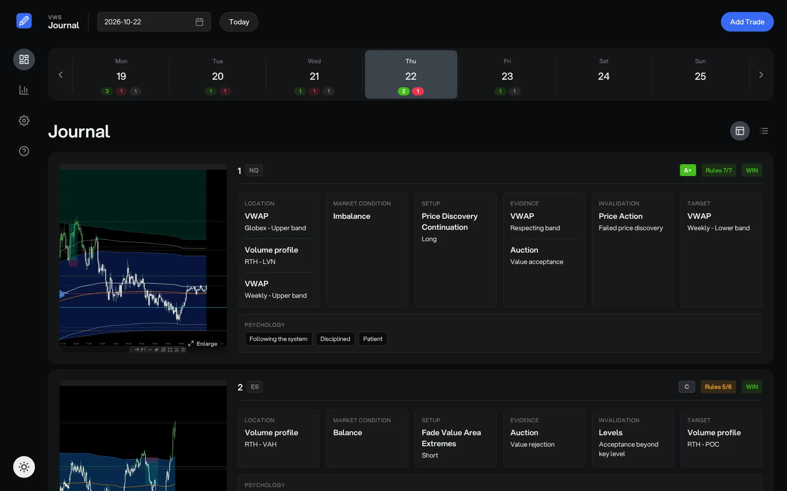

Every trade with its system context
Market condition, location, setup, direction, evidence, invalidation, target and psychology, with one click each. The form follows the levels of the system, from VWAP to the band.
Free trading journal
Log every trade with your system context: market condition, location, setup, evidence and psychology. Then track your progress.
Get startedNo account. Your trades stay on your computer. Works in Chrome and Edge on desktop.

Not about P&L, but about learning the system
Market condition, location, setup, direction, evidence, invalidation, target and psychology, with one click each. The form follows the levels of the system, from VWAP to the band.
Connect your charting window once. After that, one click captures your chart and adds it to the trade. Pasting, dropping or uploading a screenshot works too.
11 built-in charts show how well you apply your system: execution growth, results, setups and performance per day. Add your own custom charts for any question.
Edit every list in Settings and switch sections on or off, so the journal matches the way you trade.
Everything is saved in a folder on your own computer. No account, no cloud. To back up, copy the folder.
vwap-journal.jsonAll your tradessettings.jsonYour listsimg/Your screenshotsWins, losses and break-evens per day, and every trade of the day as a card with its chart and context.
For example VWAP Journal, anywhere on your computer.
Click Connect Folder below, select the folder and allow access.
Click Add Trade and pick the context of your trade.
The journal then opens in its own window, next to your charts.

Choose the empty folder you just created. The app opens right away and saves every trade you log there.
Put your settings.json in the folder before you connect it, and the journal uses your own lists.
This browser can't open a folder on your computer. Open vwsjournal.com in Google Chrome or Microsoft Edge on a desktop or laptop.
The journal is made for a desktop or laptop: it saves your trades in a folder on your computer and takes screenshots of your chart window. Open it there in Google Chrome or Microsoft Edge.
Yes. There is no subscription and no account.
In a folder on your own computer that you choose. Nothing is sent to a server.
Google Chrome or Microsoft Edge on a desktop or laptop. Safari, Firefox and phones cannot open a folder on your computer.
Yes. Every list is editable in Settings, so the journal matches the way you trade.
Manage categories and dependencies. (Changes are auto-saved)
Visual overview of your trading performance.
Everything you need to know about using VWS Journal.
Yes, your data is 100% safe and private. This app runs entirely in your browser and does not use any cloud databases or external servers. All your trades, settings, and screenshots are saved directly to the local folder you selected on your own hard drive. Nobody else has access to it.
This is a strict security feature built into web browsers (like Google Chrome). Browsers don't allow websites to automatically read/write to your local folders in the background without your explicit permission. When you close the app or restart your browser, the permission resets. You simply need to click "Reconnect Folder" to grant access again. Moved your journal to another place? Choose "Use a different folder" and select it.
Go to the Settings tab in the sidebar.
Enter or Comma (,).All changes are saved instantly.
Navigate to the Dashboard and ensure the correct date is selected. Simply click on the trade card you want to edit. The modal will open with your data populated. Make your changes and hit Save Trade. To delete it entirely, click the red Delete button in the bottom left corner.
When adding or editing a trade, you have four ways to add an image:
Ctrl+V (Windows) or Cmd+V (Mac) while the trade window is open.Images are automatically saved in the /img subfolder inside your main Journal folder.
Auto-Capture takes the screenshot for you from a window you share once per session, such as TradingView or your trading platform.
With custom charts you turn your own questions into a chart, for example "How does Return to Value do in a balanced market?" or "Which location works best when I'm not trading with FOMO?"
Go to the Stats page and check the filters at the top. The charts only show data for the selected Year, Month, Week, and Day. If you have no trades in that period, the charts will be empty. Change the filters back to "All Months" to see your overall performance.
No. Because this application relies on the secure File System Access API to save files locally, it requires a desktop browser. Mobile browsers (like Safari on iOS and Chrome on Android) do not currently support this feature.
Because all data lives exclusively on your computer, backing up is extremely simple. Just copy your entire "VWAP Journal" folder (containing settings.json, vwap-journal.json, and your /img folder) to a USB drive, Google Drive, Dropbox, or iCloud.
If you want to start with a clean slate (removing all trades), simply go to your local folder on your computer. Delete the vwap-journal.json file and the img folder. Leave your settings.json intact. When you refresh the app, it will automatically generate a fresh, empty journal for you!
No worries! First, delete the settings.json file from your local folder on your computer. Then, click the button below to download a fresh copy of the default settings. Move this new file into your folder and refresh the app.
If you are using Google Chrome, you can easily install this journal as a standalone desktop application:
Use these hotkeys to navigate the app faster like a power user.
| Action | Mac | Windows |
|---|---|---|
| Global | ||
| New Trade | Option + N | Alt + N |
| Toggle Dark/Light Mode | Option + M | Alt + M |
| Dashboard (When not typing) | ||
| Jump to Today | Option + T | Alt + T |
| Previous / Next Day | Arrow Left / Right | Arrow Left / Right |
| Previous / Next Week | Shift + Arrow Left/Right | Shift + Arrow Left/Right |
| Trade Form (When open) | ||
| Save Trade | Option + S | Alt + S |
| Cancel | Option + C | Alt + C |
| Delete Trade | Option + Backspace | Alt + Backspace |